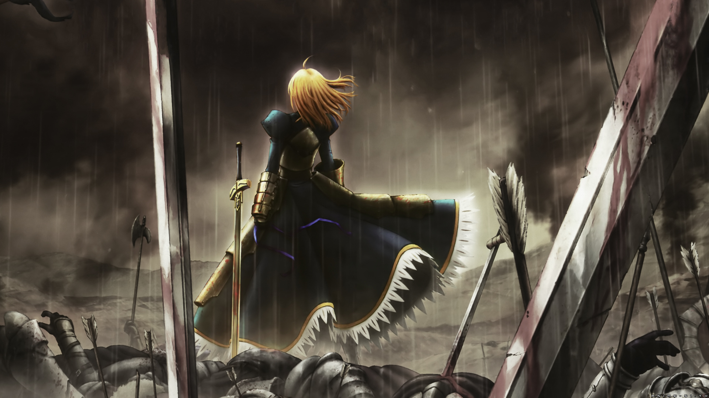
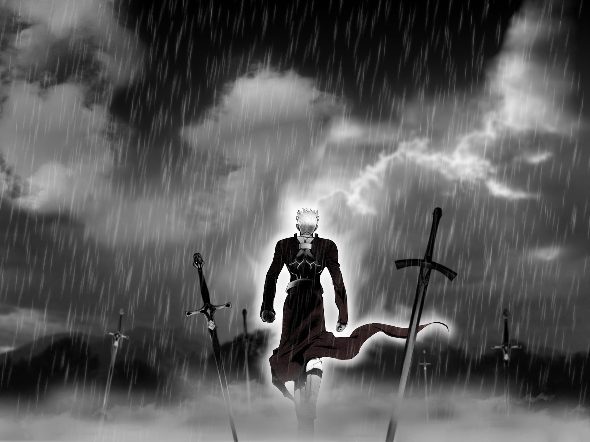

# 虫师
梦与现实的夹缝处就是 ” 魂居之处 “，谁若能通过这条路，就能看见那个世界。 - 漆原友纪

# 夏目友人帐
其实，我呼唤了无数次，每一次，终究没都没有人回答。无论如何呼唤，如何祈愿，都有无法企及的东西。 然后，我决定不再呼唤那些，即使呼唤也没有回应的东西。- 绿川幸

# 萤火之森
如果时光可以倒流 我还是会选择认识你 虽然会伤痕累累 但是心中的温暖记忆是谁都无法给与的 谢谢你来过我的世界。- 绿川幸

# 秒速五厘米
时间带着鲜明的恶意，从我身上慢慢流走；我深知，这以后的将来，我们不可能一起走过。- 新海诚

# 言叶之庭
我喜欢雨。因为它带来天空的味道。

# 未闻花名
藏好了吗 藏好了哟 找到你了 被找到了

# 三月的狮子
小时候我曾在大白天看过落雷
水色的天空中 如同水银 倾泻而下一般
淡淡的闪光 我 被那不可捉摸的模样深深吸引
—— 就算 那道光芒
在其后 将会带来沉重企鹅激烈的滂沱大雨 - 羽海野千花

# 蜂蜜与四叶草
在我还很小的时候，骑着那辆，无论走到那里都陪伴着我的蓝色自行车，有时，突然想到，如果一次也不回头，我能走到那里呢？那个时候，我想尝试的，究竟是什么呢？- 羽海野千花

# 四月是你的谎言
春天，马上就要来了。让我与你相遇的春天，就要来了。再也没有你的春天，就要来了。

# 强风吹拂
以为只要努力就一定能成功，其实是一种傲慢。 - 三浦紫苑

# 编舟记
词语的海洋浩瀚无边，词典是那片大海中的一叶扁舟，人类靠着这叶名为词典的扁舟航海，找寻最能表达自己心情的言语。那是找到独一无二的奇迹，献给想与人关联期望渡过浩淼大海人们的词典，那就是《大渡海》。- 三浦紫苑

# 十二国记
人真的容易和其他人竞争不幸呢。明明死去的人才是最可怜的。一旦同情别人，就好像自己输了一样。也许 "自己最可怜" 和 "自己最幸福" 的想法同样让人自我感觉良好吧。当被人提醒 "你错了" 时，会很生气吧。这时人会想 "为什么还要指责已经如此可怜如此不幸的我." - 小野不由美

# 犬夜叉
我是风，自由的风。 - 高桥留美子

# 钢之炼金术师
人没有牺牲的话就什么也得不到，为了得到什么就必须要做出同等的代价，这就是炼金术的等价交换原则，那时的我们相信这就是世界的真实。 - 荒川弘

# 地狱少女
人世有情，相连的红线不停的缠绕，脆落又惹人怜的彼岸花。愤怒、悲伤、终日以泪洗面，在子夜零晨的夜幕后，为你消除无法平息的怨恨。

# 死亡笔记
如果世上都是些 “虚伪” 的天使，那么我愿意做最真实的 “恶魔”！

# 食梦者
亚城木梦叶 - 亚豆美保，真诚最高，高木秋人，梦想实现。

# 棋魂
连接遥远的过去与未来，我们为此而存在……

# 死神
如果我是雨的话，也能像连接那永远都不将交汇的天空和大地一样，去连接某个人的心吗？ - 久保带人

# 银魂
眼泪这东西啊，是流出来就能把辛酸和悲伤都冲走的好东西。可等你们长大成人了就会明白，人生还有眼泪也冲刷不干净的巨大悲伤，还有难忘的痛苦让你们即使想哭也不能流泪，所以真正坚强的人，都是越想哭反而笑得越大声，怀揣着痛苦和悲伤，即使如此也要带上它们笑着前行。- 空知英秋

# 浪客剑心
对与错，应该由历史来决定。我们能做的，就是相信自己认为是对的事，然后为此战斗…… 不过我认为那个强者生，弱者死的…… 弱肉强食时代，绝对是错的！绝对错！- 和月伸宏

# 黑执事
用我那牵强的微笑，活出无人能比的骄傲。

# 火影忍者
木叶飞舞之处，火亦生生不息。

# 海贼王
世代传承的意志，时代的变迁，人的梦想，这些都是挡不住的，只要人们继续追求自由的解答，这一切都将永不停止。

# 家庭教师
雾可以阻挡天空的视线，却不能锁住天空前进的脚步。

# 名侦探柯南
夕阳，将世界像血一样染红了的，太阳的最终宿命，我还可以看多少次，这种悲哀的天色。

# 网球王子
You Still Have Lots More To Work On！你还差的远呢！
# JOJO 的奇幻冒险
但我拒绝！我岸边露伴最喜欢的事情之一，就是向那些自以为是的家伙说，NO！

# 妖精的尾巴
我不认为依赖一个人有什么不对，在你的身边有许许多多的人，人与人之间总是紧密相连的，只要你伸出手我们就在你的身边。当你发现一个人很寂寞的时候，人就会变得温柔起来。

# 空之境界
逃避有两种：我们把有目的的逃避叫做飞翔，把没有目的的逃避叫做漂浮。

# Fate Zero
不过傲慢分为两种。一种是能力过于低下，还有一种是志向异常远大的。前者显得非常愚蠢，后者是难得一见的珍贵种类。

# Fate Stay Night
当一个人公平公正地去对待每个人的时候，那便等同于他已经无法爱上任何人。

# 命运石之门
这一切都是命运石之门的选择！

# 只有我不存在的城市
『如果当时这么做就好了』这句话每天都萦绕于心。但是，它并没有化作真切的悔意。只是转瞬即逝的托词罢了。

# 一拳超人
世界上，没有一拳解决不了的事，如果有，那就两拳。

# 暗杀教室
被大家所依赖的人，在自己受伤的时候往往只能独自面对痛苦。- 松井优征

# 花田少年史

# 滑头鬼之孙
就算风吹散了冰雪，想念也会留存下来。

# 野良神
在此引起骚乱者，吾神夜斗降临与此，臣服于雪器之威，去除各种污秽障壁！

# 东京暗鸦
或许这么做是错的 但是这是我所做出的选择啊

# 黑之契约者
适用于所有的人的正义并不存在，有时候为了贯彻正义必须牺牲小部分人的利益而保护大多数人的利益，而这样的正义有时会被 “完美” 正义论者指责，而这也无可奈何，因为说远比做要简单得多。

# 幻灵镇魂曲
没有拒绝孵化的蛋，更没有不想盛开的花朵，这不是意志的问题。
# 黑礁
每个人的脚踝都陷于污水中，有些人选择挣脱污水，也有些人选择在污水中腐烂。 - 广江礼威

# 无头骑士异闻录
距离男孩开门还有 17s，距离男孩看见女孩还有 14s, 距离男孩踢飞男孩的朋友还有 12s, 距离男孩像女孩表白还有…

# 刀剑神域
这个世界，只需要一把剑就可以去往任何地方。

# 某科学的超电磁炮
当面对两难的抉择时，不妨丢一枚硬币吧，并非是要靠那二分之一的机运来帮你做出抉择！而是因为当硬币被抛上空中，开始旋转的那一瞬间你会突然明白，自己想要的！- 镰池和马
# 罪恶王冠
就算是对我抱有敌意的人，也是被某个人深爱着而降生在这个世界上的。

# Another
夜见的黄昏下，空洞的苍之眸。 - 绫辻行人

# 未来日记
“雪辉，就由我来保护！所以雪辉你只要利用我就好了。” - えすのサカエ

# 来自新世界
一旦醉心于狩猎，不到最后关头不会发现自己才是猎物。- 贵志祐介
# 来自风平浪静的明天
自己觉得不错的东西，就会想要和自己觉得不错的伙伴们一起观赏。- 冈田麿里

# 魔笛 Magi
朋友，你是要跟我走一辈子的人，即使不在路上，你也永远住在我心里。

# 薄樱鬼
绚烂如繁樱，瞬息绽放后凋落。花以香为证，曾美至惊心动魄。
# 相合之物
# 宝石之国
因为硬度低，如果没有了勇气就什么都不剩了。(万碎爷 😂)

# 多罗罗
难道我捡到并救活了你，就是为了让你尝遍伤心的滋味吗？

# EVA 新世纪福音战士
所谓长大成人，就是不断的聚了散，散了又聚，为了让彼此不会受伤害而保持一个适当的距离！

# 玉子市场
年轻人总是急于求成，就连等待一匙砂糖彻底溶解的耐心也没有，后悔所带来的苦涩，恰好印证了你曾经有所作为，这一点一滴都将成为点缀人生的各种味道。

# 吹响吧！上低音号
人真是单纯，一旦知道有回报，就会去努力。努力若有成果，就会加倍努力。

# 冰菓
我很好奇！

# 文学少女
如果一个人感到寂寞的时候，就读书吧。想象一下，那个人在思考什么，想传达什么。那样的话，或许就会找到绝美的宝藏。
# 高分少女
# 花开伊吕波
有的人虽然没有自己的梦想，无法自己奔跑，但是努力追随有梦想的人，对他们来说也就是他们自己的梦想。

# 花牌情缘
花开难波津，寒冬闭羞颜。今兮春满地，花开香芬芳。 -《小仓百人一首》
# 樱花庄的宠物女孩
我发现了，无聊的不是这段时光，而是和别人相似的自己。

# 我的青春恋爱物语果然有问题
温柔正确的人总是难以生存，因为这世界既不温柔，也不正确。

# 元气囝仔
所见之物皆美丽动人，这就是所谓的成长吗？
# 尽管如此世界依然美丽
你虽然得到了世界，眼眸中却什么都没映出来呢？
# 月刊少女野崎君
就算犯规也无所谓，比赛就是要进行到被罚下场的那一刻。

# 翼・年代记
一个人脸上有太多笑，是因为心中有太多泪。－CLAMP

# 四月一日灵异事件簿
世上没有偶然，有的只是必然。－CLAMP

# 通灵王
不管做什么事，必定有人赞成有人反对，因为大家重视的东西都有所不同．而且，不管什么事情，都可以随意给他加上好与不好的理由，所以，若果一定要分清争议与罪恶的行为，反而有问题呢．因此，重要的事情由心去决定就行了，不是凭感情，而是凭心！

## 七大罪
高举的手势即为胜利的证明，其背影阐述的便是最强二字。－铃木央

# 寄生兽
人类之所以会去照顾其他生物，是因为他感到空虚。之所以会想保护环境，是因为他不想被环境毁灭。 －岩明均

# 东京喰种
无法舍弃两个方中的任何一方，那不是温柔，那不过是软弱罢了。

# 叛逆的鲁鲁修
知道雪为什么是白色的吗？因为它忘记了自己曾经的颜色。

# 大剑
相反的行为，矛盾的思想，还有被撕裂的精神，为了生存而做出的一切，将我的内心杀死了。－八木教广

# 全职猎人
尽可能预想所有残酷的可能性、因为现实永远让你无法预警，而且又吝于给人慈悲。－富坚义博

# 幽游白书
# 怪物 Monster
# 男子高校生的日常
今天的风 甚为喧嚣啊
不过这风似乎 在哭泣的样子这股风把一些坏东西 带到镇上去了
快走吧 趁风停止之前
要来不及了 那边的便利商店 洋芋片只要半价
# 乒乓
你正手无力，反手不精，脚步松散，反应迟钝，没一个动作像样的！就凭这还想和我同场竞技？做你的美梦！
# 昭和元禄落语心中
人并不能互相完全了解，但即便如此人还是要一起生活，人是喜欢分享那些不值一提无聊之事的生物，所以人才无法独处吧。－云田晴子
# 冰海战记
明知人总有一天会死，还能够珍惜生命吗？明知一切终有尽头，是否还要继续活下去呢？
# 俺物语
好女孩的朋友不一定都是好女孩哦，有可能因为她人太好才会 “被交朋友”。
# CLANNAD
世界是美丽的，就算充满悲伤和泪水。也请睁开你的双眼，去做你想要做的事情，成为你想要成为的人，去找到你的朋友。不必焦躁，慢慢地去长大。

# 石纪元

# 齐木楠雄的灾难
不过被给予同时也意味着被剥夺。就像被宠坏了的孩子，虽然给予了一切，但也被剥夺了独立的能力。我被夺走了很多东西，包括费尽心力完成一件事情的成就感，或者是竞技胜利的兴奋，又或者是惊喜，紧张之类的情绪，我从来感觉不到，也不会在我身上体现出来。不仅没有愤怒悲伤，连喜悦开心也没有，这就是我到目前为止的人生。
# 灵能百分百
# 奇巧计程车
# 动物狂想曲
# 动物新世代
# 奇诺之旅
无论什么人看到天空飞翔的鸟，都会想去旅行吧？－时雨泽惠一
# 昨日之歌
人类并不是那么会改变，可是时间却一点一点的流逝。
# 辉夜大小姐想让我告白
为什么你要这么努力啊？因为不想被别人看到我不帅气的样子，要展示给别人的，还是要帅气的样子才行。

# 月色真美
我喜欢的人… 也能喜欢上自己，我认为这就是奇迹。

# 工作细胞
那个呢，那个呢，因为出了些状况，施工进度推迟了

# 咒术回战

# 鬼灭之刃

# 黑色四叶草

# 转生成蜘蛛又怎样！

# 致不灭的你

# 少女歌剧

# 死神少爷与黑女仆

# 异世界迷宫黑心企业

# 我们的重置人生

# 阴晴不定大哥哥

# 头文字 D

# 灰与幻想的格林姆迦尔

# 记录的地平线

# 关于前辈很烦人的事

# 擅长捉弄的高木同学

# 小林家的龙女仆

# 南家三姐妹

# 间谍过家家

# 夏日重现

# 紫罗兰永恒花园

# ReLIFE

# 散化礼弥

# 比宇宙更遥远的地方

# 干物妹！小埋

# 白兔糖

# 狼的孩子雨和雪

# 真实之泪

# 碧蓝之海

# 约定的梦幻岛

# 声之形

# 少女终末旅行

# 黄金神威

# 妖精森林的小不点

# 刻刻

# 来自深渊